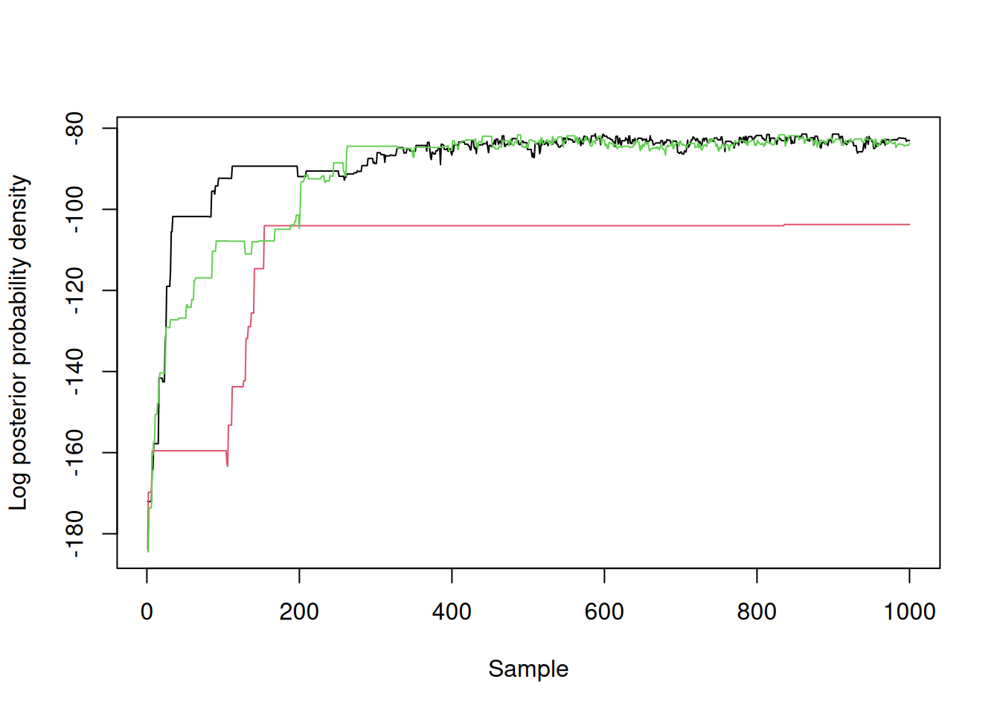

library(odin2)
library(dust2)
library(monty)14 Inference
Getting started with inference on odin models. In this chapter, we will fit the simple SIR model from Section 7.3; this combines all three packages together and tries to demonstrate some of the flexibility we are aiming for.
14.1 Recap
Our basic odin code describes an SIR system. We compute daily incidence using zero_every in the initial conditions and compare this to case data using a Poison likelihood:
sir <- odin({
update(S) <- S - n_SI
update(I) <- I + n_SI - n_IR
update(R) <- R + n_IR
update(incidence) <- incidence + n_SI
p_SI <- 1 - exp(-beta * I / N * dt)
p_IR <- 1 - exp(-gamma * dt)
n_SI <- Binomial(S, p_SI)
n_IR <- Binomial(I, p_IR)
initial(S) <- N - I0
initial(I) <- I0
initial(R) <- 0
initial(incidence, zero_every = 1) <- 0
N <- parameter(1000)
I0 <- parameter(10)
beta <- parameter(0.2)
gamma <- parameter(0.1)
cases <- data()
cases ~ Poisson(incidence)
})
sir
#>
#> ── <dust_system_generator: odin_system> ────────────────────────────────────────
#> ℹ This system has 'compare_data' support
#> ℹ This system runs in discrete time with a default dt of 1
#> ℹ This system has 4 parameters
#> → 'N', 'I0', 'beta', and 'gamma'
#> ℹ Use dust2::dust_system_create() (`?dust2::dust_system_create()`) to create a system with this generator
#> ℹ Use coef() (`?stats::coef()`) to get more information on parametersWe are looking to fit this to a small (synthetic) data set data/incidence.csv.
d <- read.csv("data/incidence.csv")
head(d)
#> time cases
#> 1 1 12
#> 2 2 23
#> 3 3 25
#> 4 4 36
#> 5 5 30
#> 6 6 57We have constructed a particle filter with this system and data, with which we can compute likelihoods:
filter <- dust_filter_create(sir, time_start = 0, data = d, n_particles = 200)
dust_likelihood_run(filter, list(beta = 0.3, gamma = 0.15, I0 = 50))
#> [1] -81.4294114.2 Running an MCMC
Our aim is to fit the parameters beta, gamma and I0 using MCMC (because this is an MCMC using a particle filter we might call this pMCMC).
The first challenge is that our filter takes a named list of inputs, but any MCMC we run will work in terms of a vector of parameter space. In this case it seems trivial, we should be able to take a vector of numbers c(0.3, 0.15, 50), stick some names on them and convert to a list with as.list(). However, as seen in the more complex models (e.g., in Chapter 4) this won’t be generally possible.
Our solution is to use monty_packer objects to smooth this transition:
packer <- monty_packer(c("beta", "gamma", "I0"))
packer
#>
#> ── <monty_packer> ──────────────────────────────────────────────────────────────
#> ℹ Packing 3 parameters: 'beta', 'gamma', and 'I0'
#> ℹ Use '$pack()' to convert from a list to a vector
#> ℹ Use '$unpack()' to convert from a vector to a list
#> ℹ See `?monty_packer()` for more informationYou can use a packer object to fix other inputs to your system. For example, we might write:
packer <- monty_packer(c("beta", "gamma", "I0"), fixed = list(N = 1000))which fixes N to 1000. This is an input to our system, but not an input to the statistical process.
We can combine our filter and packer together to make a monty_model object:
likelihood <- dust_likelihood_monty(filter, packer)
likelihood
#>
#> ── <monty_model> ───────────────────────────────────────────────────────────────
#> ℹ Model has 3 parameters: 'beta', 'gamma', and 'I0'
#> ℹ This model:
#> • is stochastic
#> ℹ See `?monty_model()` for more informationAt this point, we can “forget” that our likelihood is an SIR model, and instead just note that it is a stochastic estimate of a likelihood.
The other ingredient we need is a prior. This we can construct with monty_dsl as before:
prior <- monty_dsl({
beta ~ Exponential(mean = 0.3)
gamma ~ Exponential(mean = 0.1)
I0 ~ Uniform(1, 50)
})We use broad exponential priors on beta and gamma but with a higher mean for beta (reflecting our prior belief that an epidemic did happen) and a uniform prior for the initial number of infected individuals.
Our posterior is the product of the likelihood and prior, or the sum of their logs:
posterior <- likelihood + priorNext, we define a sampler; we’ll start with a random walk with a fairly arbitrary diagonal proposal matrix:
vcv <- diag(3) * 0.0004
sampler <- monty_sampler_random_walk(vcv)We start this off, using explicit initial conditions
samples <- monty_sample(posterior, sampler, 1000, initial = c(0.3, 0.1, 5),
n_chains = 3)
#> ⡀⠀ Sampling [▁▁▁] ■ | 0% ETA: 17s
#> ⠄⠀ Sampling [▁▁▁] ■■ | 3% ETA: 4s
#> ✔ Sampled 3000 steps across 3 chains in 2.6s
#>
Note
We have used explicit initial conditions here, which might not be what you want in all situations. Better might be to sample from the prior, but we have not yet implemented support to try a few points from the sample before getting a point with finite density, which is really needed here.
Here the log posterior density of our three chains over time, showing a rapid improvement in the posterior probability density followed by what might be reasonable (but not great) mixing:
matplot(samples$density, type = "l", lty = 1,
xlab = "Sample", ylab = "Log posterior probability density")
14.2.1 Working with samples
The samples that we get back contain sampled densities and parameters; they are described more in vignette("samples", package = "monty")
samples
#>
#> ── <monty_samples: 3 parameters x 1000 samples x 3 chains> ─────────────────────
#> ℹ Parameters: 'beta', 'gamma', and 'I0'
#> ℹ Conversion to other types is possible:
#> → ! posterior::as_draws_array() [package installed, but not loaded]
#> → ! posterior::as_draws_df() [package installed, but not loaded]
#> → ! coda::as.mcmc.list() [package installed, but not loaded]
#> ℹ See `?monty_sample()` and `vignette("samples")` for more informationYou can convert them into other formats, for example the posterior package:
samples_df <- posterior::as_draws_df(samples)
samples_df
#> # A draws_df: 1000 iterations, 3 chains, and 3 variables
#> beta gamma I0
#> 1 0.32 0.083 5
#> 2 0.32 0.083 5
#> 3 0.32 0.083 5
#> 4 0.32 0.083 5
#> 5 0.32 0.083 5
#> 6 0.32 0.083 5
#> 7 0.31 0.117 5
#> 8 0.31 0.117 5
#> 9 0.31 0.148 5
#> 10 0.31 0.148 5
#> # ... with 2990 more draws
#> # ... hidden reserved variables {'.chain', '.iteration', '.draw'}We don’t implement any diagnostics in monty itself, and suggest that you use the diagnostics available in these other packages, for example:
posterior::summarise_draws(samples_df)
#> # A tibble: 3 × 10
#> variable mean median sd mad q5 q95 rhat ess_bulk ess_tail
#> <chr> <dbl> <dbl> <dbl> <dbl> <dbl> <dbl> <dbl> <dbl> <dbl>
#> 1 beta 0.623 0.586 0.218 0.268 0.360 0.950 2.15 3.90 24.2
#> 2 gamma 0.449 0.400 0.246 0.271 0.148 0.840 2.27 3.78 16.9
#> 3 I0 5.10 5.04 0.166 0.111 4.95 5.44 1.94 4.26 16.1
Warning
This section needs expanding to help us see how much work this set of samples needs before moving into the next section, though some of that will better go in the previous monty section most likely?
14.3 Extracting trajectories while we sample
A complication of running these dynamical models is that we are interested in more than just the sampled parameters; we’re interested in how the system evolved over time given these parameters. However, because the model is stochastic we can’t simply simulate over time given the parameters because that may not be representative of the inferred time-series when the particle filter ran (see Chapter 7). We need some way of sampling trajectories while the sampler runs, and storing these alongside the samples, which will give us a paired set of parameters and their histories.
The simplest way of doing this is to specify save_trajectories = TRUE when constructing the monty model from the filter:
likelihood <- dust_likelihood_monty(filter, packer, save_trajectories = TRUE)This adds a monty observer to the model:
likelihood
#>
#> ── <monty_model> ───────────────────────────────────────────────────────────────
#> ℹ Model has 3 parameters: 'beta', 'gamma', and 'I0'
#> ℹ This model:
#> • is stochastic
#> • has an observer
#> ℹ See `?monty_model()` for more informationWe then proceed as before:
posterior <- likelihood + prior
samples <- monty_sample(posterior, sampler, 1000, initial = c(0.3, 0.1, 5),
n_chains = 3)
#> ⡀⠀ Sampling [▁▁▁] ■ | 0% ETA: 10s
#> ✔ Sampled 3000 steps across 3 chains in 2.7s
#>
samples
#>
#> ── <monty_samples: 3 parameters x 1000 samples x 3 chains> ─────────────────────
#> ℹ Parameters: 'beta', 'gamma', and 'I0'
#> ℹ Conversion to other types is possible:
#> → ✔ posterior::as_draws_array() [package loaded]
#> → ✔ posterior::as_draws_df() [package loaded]
#> → ! coda::as.mcmc.list() [package installed, but not loaded]
#> ℹ These samples have associated observations
#> ℹ See `?monty_sample()` and `vignette("samples")` for more informationAs before we have a 3-dimensional array of parameters (3 parameters x 1000 steps x 3 chains)
dim(samples$pars)
#> [1] 3 1000 3But we also have a new set of “observations” in the $observations element. The trajectories element of this contains our trajectories:
dim(samples$observations$trajectories)
#> [1] 4 20 1000 3The trajectories are a 4-dimensional array (4 states x 20 time points x 1000 samples x 3 chains). Trajectories will get very large very quickly; this small example generates around 2MB of data so we only need do increase by a factor of 1000 to start running into the limits of RAM on small machines, and this is surprisingly easy to do in practice.
object.size(samples$observations$trajectories)
#> 1920224 bytesThe trajectories that we return here are in the same order as the parameters (the 1000 x 3 dimensions at the end of each object), so you have a pairing of parameters with trajectories.
14.4 Next steps
The next steps here:
- continue that chain without the burn-in (needs a monty tweak)
- add an observer so we can see what is going on
- run multiple chains and get started with diagnostics
In other chapters eventually
- deterministic fits
- run multiple groups
- working with larger models
- thinning while running
- onward simulation
- restarts (once enabled)
- multistage fits (once enabled)